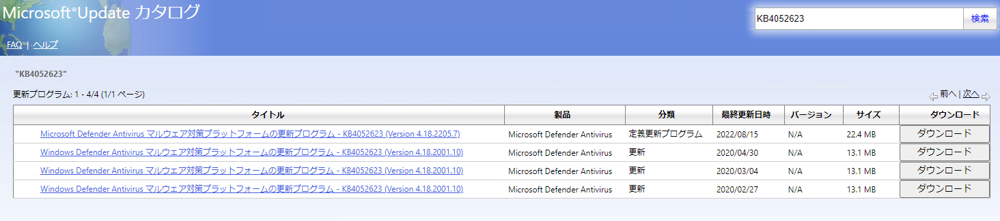
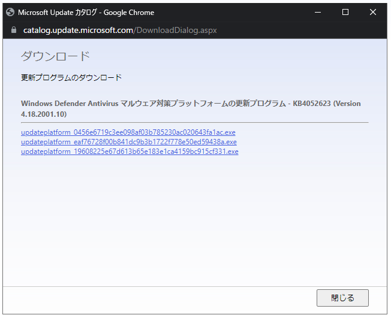
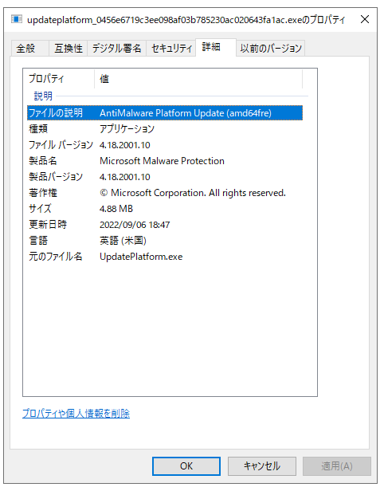

こんにちは Azure Security サポートチームです。
本記事ではMicrosoft Defender ウイルス対策(MDAV)のマルウェア対策プラットフォームを手動で更新する方法についてご案内いたします。
MDAVのセキュリティインテリジェンス(定義ファイル)を手動で更新する方法については以下の記事をご参照ください。
参考情報：Microsoft Defender ウイルス対策のセキュリティインテリジェンス(定義ファイル)を手動で更新・ロールバック・削除する方法
※ 本記事の内容はWindow Server 2019環境にて動作を確認いたしております。
本記事の内容
MDAVのマルウェア対策プラットフォームについて
MDAVにより端末に最新の脅威からの保護を提供するためには、セキュリティインテリジェンスの更新プログラムと製品の更新プログラム(マルウェア対策プラットフォーム)を常に最新に保つことが重要です。
月次プラットフォームとエンジンのバージョンに記載の通り、MDAVのマルウェア対策プラットフォームは公開している最新バージョンから 2 世代前より古いバージョンのサポートはアップグレードに関するサポートのみに縮小されます。
MDAVのマルウェア対策プラットフォーム更新プログラムは、2022年8月時点では「KB4052623」にてリリースされております。
この更新プログラムは通常、 Windows Update によってインターネットまたは WSUS などの更新元から取得され、自動的に更新されます。
本記事では、トラブルシューティングなどの目的で、MDAVのマルウェア対策プラットフォームを手動で更新する方法についてご紹介いたします。
事前準備
MDAVのマルウェア対策プラットフォームは、更新プログラム(KB4052623)を端末に手動適用することで更新が可能です。
本項では、マルウェア対策プラットフォームの手動更新前に必要な準備について記載します。
端末情報の確認
マルウェア対策プラットフォームの手動更新前に、更新を行う端末で以下の情報を確認する必要があります。
- MDAVのサービス稼働状況の確認
Windows Update または手動更新手順によって MDAV のマルウェア対策プラットフォームを更新するためには、前提条件としてMDAVのサービス(WinDefend)が稼働している必要があります。
MDAV のサービスが停止している場合はマルウェア対策プラットフォームの更新に失敗するため、更新前にサービスが稼働していることを確認します。
PowerShell またはコマンドプロンプトで以下のコマンドを実行し、[STATE] に [4 RUNNING] と表示されることを確認します。
1 | sc.exe query WinDefend |
もし Windows Server 2016/ 2019 /2022 などのサーバ OS で MDAV のサービスが停止している場合、グループポリシーまたはレジストリの設定によってMDAVが無効化されているか否かを確認し、無効化されている場合は設定を解除する必要があります。
上記のサーバ OS を使用している場合は、グループ ポリシーを使用して Microsoft Defender ウイルス対策を構成するに記載の手順に従って、[Microsoft Defender ウイルス対策を無効にする] の設定を [未構成] または [無効] に変更します。
レジストリ設定により MDAV を無効化している場合は、 DisableAntiSpyware のレジストリ値を削除します。
なお、バージョン4.18.2108.4以上のマルウェア対策プラットフォームが適用されている Windows 10 / 11 などのクライアント OS では、前述のグループポリシーや DisableAntiSpyware を用いた MDAV の無効化設定はサポートされていません。
これらのクライアント OS では、サードパーティ製のアンチマルウェアソフトがインストールされた際に、 MDAV が自動的に無効化されます。
そのため、上記のクライアント OS で MDAV を有効化するためには、サードパーティ製のアンチマルウェアソフトを一時的にアンインストールする必要があります。
- 現在適用されているマルウェア対策プラットフォームのバージョン
端末に適用されているマルウェア対策プラットフォームのバージョンが4.18.2001.10未満である場合、最新の更新プログラムを適用する前に4.18.2001.10の更新プログラムを適用する必要があります。
※ バージョン4.18.2001.10を適用する際にはOSの再起動が必要になります。
※ すでにバージョン4.18.2001.10以降のバージョンが適用されている場合は、マルウェア対策プラットフォームの更新時のOS再起動は不要です。
現在適用されているマルウェア対策プラットフォームのバージョン情報は、PowerShellにて以下のコマンドレットを実行することで確認が可能です。
1 | Get-MpComputerStatus | Select-Object AMProductVersion |
- 端末のCPUアーキテクチャ
端末のCPUプラットフォームによって、マルウェア対策プラットフォームの手動更新に使用するモジュールが異なります。
具体的には、以下の3種類の更新モジュールが用意されておりますため、対象の端末に合わせて更新モジュールを選択する必要があります。
- amd64fre：64 bit CPU アーキテクチャ向けのパッチ
- x86fre：32 bit CPU アーキテクチャ向けのパッチ
- arm64fre：arm64 アーキテクチャ向けのパッチ
端末の情報については、[設定]アプリの[システム]>[バージョン情報]>[デバイスの仕様]の表示を参照するか、以下のコマンドレットにて特定することが可能です。
1 | Get-ComputerInfo | Select-Object WindowsBuildLabEx,CsSystemType |
使用するモジュールのダウンロード
端末情報を確認した後、更新に使用するモジュールを取得して端末にコピーします。
更新プログラムはMicrosoft Update カタログからダウンロードできます。

- バージョン
4.18.2001.10の取得(端末のバージョンが4.18.2001.10未満である場合のみ)
端末に適用されているマルウェア対策プラットフォームのバージョンが4.18.2001.10未満である場合は、まずバージョン4.18.2001.10の更新プログラムをダウンロードする必要があります。
タイトルが「Windows Defender Antivirus マルウェア対策プラットフォームの更新プログラム - KB4052623 (Version 4.18.2001.10)」である行の内、最終更新日時が最も新しい行を選び、右側の[ダウンロード]をクリックします。
以下の画面が表示されたら、端末のCPUプラットフォームに対応したモジュールをダウンロードします。

各モジュールに対応するプラットフォームを確認する場合は、それぞれのファイルを一度ダウンロードした後、右クリックして [プロパティ]>[詳細] を開きます。
ここで、[ファイルの説明] 欄の括弧の中に対象となるプラットフォームの情報が記載されています。

なお、本記事執筆時点では、バージョン4.18.2001.10の更新プログラムのファイル名と対象プラットフォームの対応は以下の通りであることを確認しております。
| ファイル名 | 対応するアーキテクチャ |
|---|---|
| updateplatform_0456e6719c3ee098af03b785230ac020643fa1ac.exe | amd64 |
| updateplatform_eaf76728f00b841dc9b3b1722f778e50ed59438a.exe | x86 |
| updateplatform_19608225e67d613b65e183e1ca4159bc915cf331.exe | arm64 |
- 最新バージョンの取得
次に、最新の更新プログラムを取得します。
[1.] の手順と同様に、Microsoft Update カタログにてタイトルが最新バージョンを指す行の右側 [ダウンロード] ボタンをクリックします。
※ 本記事執筆時点では4.18.2205.7が最新バージョンです。
端末のCPUプラットフォームに対応したモジュールをダウンロードするために、3つすべてのモジュールをダウンロードします。
ダウンロードしたモジュールを右クリックして [プロパティ]>[詳細] を開き、[ファイルの説明] 欄の情報から更新対象のプラットフォームに対応したモジュールを特定し、不要なファイルを端末から削除します。
マルウェア対策プラットフォームの手動更新方法
バージョン4.18.2001.10の手動適用(端末のバージョンが4.18.2001.10未満である場合のみ)
端末に適用されているマルウェア対策プラットフォームのバージョンが4.18.2001.10未満である場合、先にバージョン4.18.2001.10の更新プログラムを適用し、OSを再起動する必要があります。
事前に取得したバージョン4.18.2001.10の更新プログラムを端末にコピーし、右クリックして [管理者権限で実行] をクリックした後、更新が完了するまで1分ほど待機します。
※ 更新はバックグラウンドで実施されます。
その後OSを再起動し、PowerShellにて以下のコマンドレットを実行し、マルウェア対策プラットフォームのバージョンが4.18.2001.10に更新されていることを確認します。
1 | Get-MpComputerStatus | Select-Object AMProductVersion |
最新バージョンのマルウェア対策プラットフォームの手動適用
事前に取得した最新バージョンの更新プログラムを端末にコピーし、右クリックして [管理者権限で実行] をクリックした後、更新が完了するまで1分ほど待機します。
※ こちらも更新はバックグラウンドで実行されます。
PowerShellにて以下のコマンドレットを実行し、マルウェア対策プラットフォームのバージョンが最新バージョンに更新されていることを確認します。
1 | Get-MpComputerStatus | Select-Object AMProductVersion |
※ バージョン4.18.2001.10以降の更新プログラムを適用する際にはOSの再起動は不要です。
更新プログラムのロールバック手順
続いて、トラブルシューティングを目的としてMDAVのマルウェア対策プラットフォームをロールバックする方法についてご紹介いたします。
マルウェア対策プラットフォームのロールバックはコマンドライン ツールMpCmdRun.exeを使用することで実施することが可能です。
MpCmdRun.exeは、システムの以下のフォルダに存在します。
(使用するためには、管理者権限でPower Shellかコマンドプロンプトを起動する必要があります)
- C:\Program Files\Windows Defender
- C:\ProgramData\Microsoft\Windows Defender\Platform<最新のプラットフォームバージョン>
参考情報：コマンドラインを使用して Microsoft Defender ウイルス対策を管理する
以下のコマンドで、コマンドラインツールMpCmdRun.exeを使用してマルウェア対策プラットフォームをロールバックすることができます。
※ 改ざん防止機能が有効な場合、これらのコマンド実行がブロックされる場合があります。
※ 公開している最新バージョンより 3 世代以上古いバージョンのサポートはアップグレードに関するサポートのみに縮小されるため、ロールバック後は必ずマルウェア対策プラットフォームを更新いただくようお願いいたします。
※ Windows 10 1809 / Windows Server 2016 以前のバージョンではロールバックはサポートされていません。
- 以前のバージョンにロールバックする方法
以下のコマンドで、マルウェア対策プラットフォームを以前のバージョンにロールバックすることができます。
1 | MpCmdRun.exe -revertplatform |
- 更新前のバージョンにロールバックする方法
以下のコマンドで、マルウェア対策プラットフォームを完全に更新前の状態にロールバックすることができます。
1 | MpCmdRun.exe -resetplatform |
まとめ
本記事ではMicrosoft Defender ウイルス対策(MDAV)のマルウェア対策プラットフォームを手動で更新・ロールバックする方法についてご紹介いたしました。
※ 本情報の内容（添付文書、リンク先などを含む）は、作成日時点でのものであり、予告なく変更される場合がありますことご了承ください。